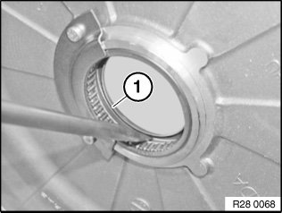
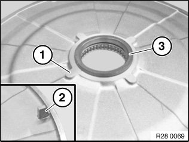
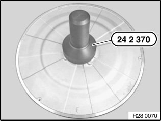
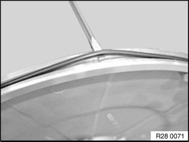

28 40 050 Replacing Shaft Seal For Clutch Cover (GS7D36SG)
28 40 050 Replacing shaft seal for clutch cover (GS7D36SG)Special tools required:
Important!
It is essential to adhere to conditions of absolute cleanliness.
Any dirty parts must be cleaned before removing the clutch cover.
Necessary preliminary work:
^ Remove clutch cover
To prevent the transmission oil from spilling out, tilt the gearbox back before removing the clutch cover.
Installation note:
After completion of work, check transmission oil level.
Use only the approved transmission oil.
Failure to comply with this instruction will result in serious damage to the twin-clutch gearbox.

Use a suitable tool to take the radial shaft seal (1) off the clutch cover.
Important!
Risk of damage:
Damage to the clutch cover will result in oil leaks!
If the clutch cover was damaged on removing the radial shaft seal, it is imperative that the cover be replaced.

Place the clutch cover (1) out flat on a workbench.
Important!
Pay attention to lug (2).
Coat sealing lips of radial shaft seal with transmission oil.
Press the radial shaft seal (3) lightly into the clutch cover.

Use special tool 24 2 370 to drive the radial shaft seal into the clutch cover until the sealing ring is flush.

Use a suitable tool to take the O-ring of the clutch cover out of the groove.
Use a lint-free cloth to remove oil contamination from the O-ring groove.
Installation note:
Replace O-ring.
Coat O-ring with transmission oil before installing.